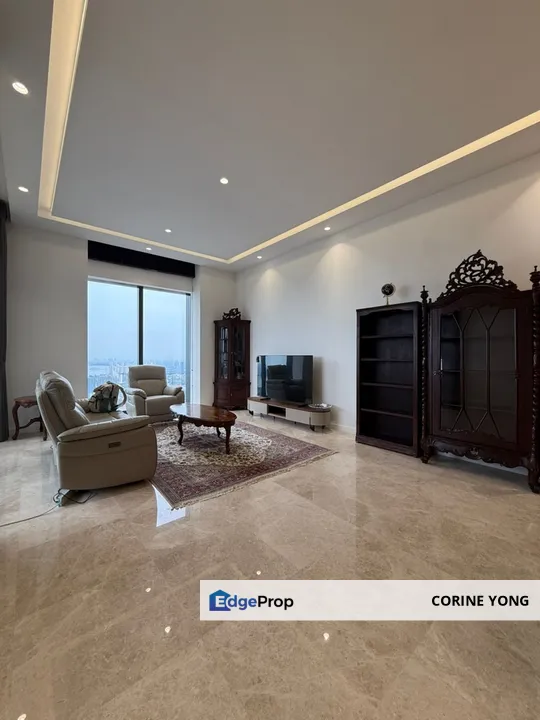
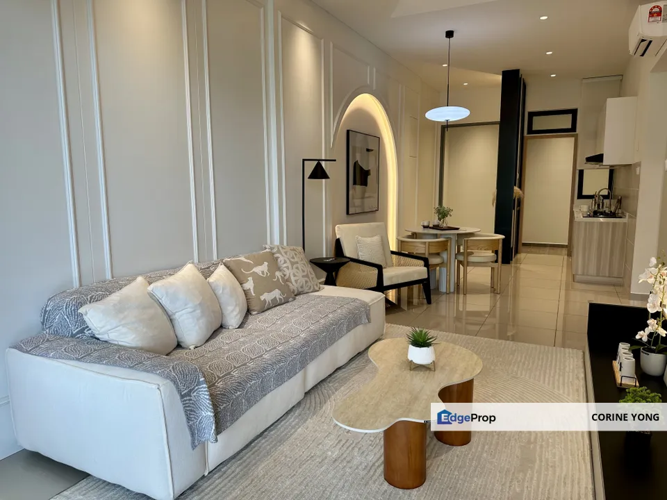
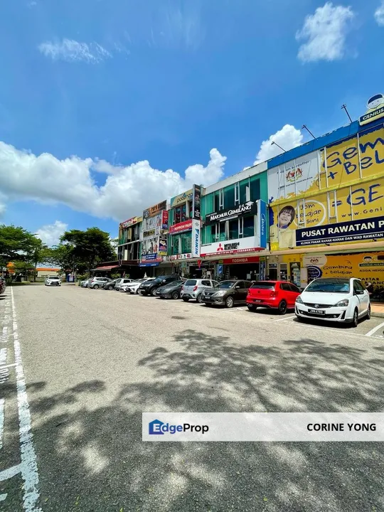
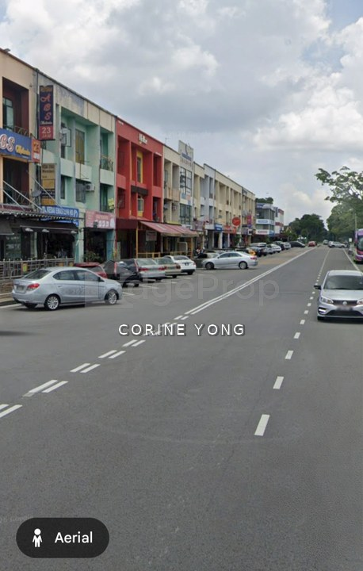
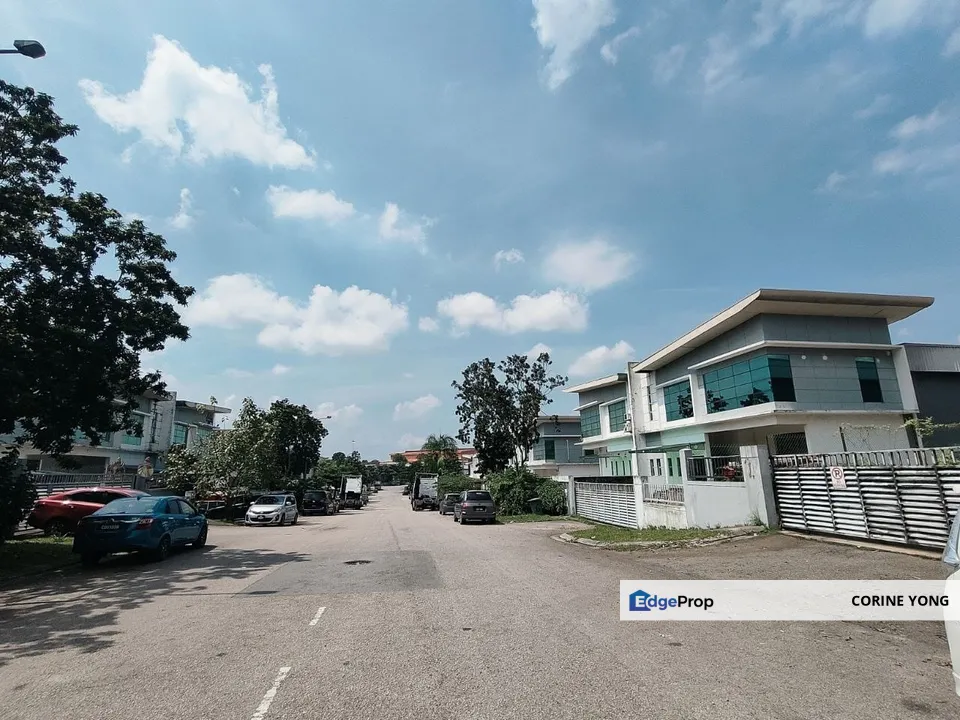
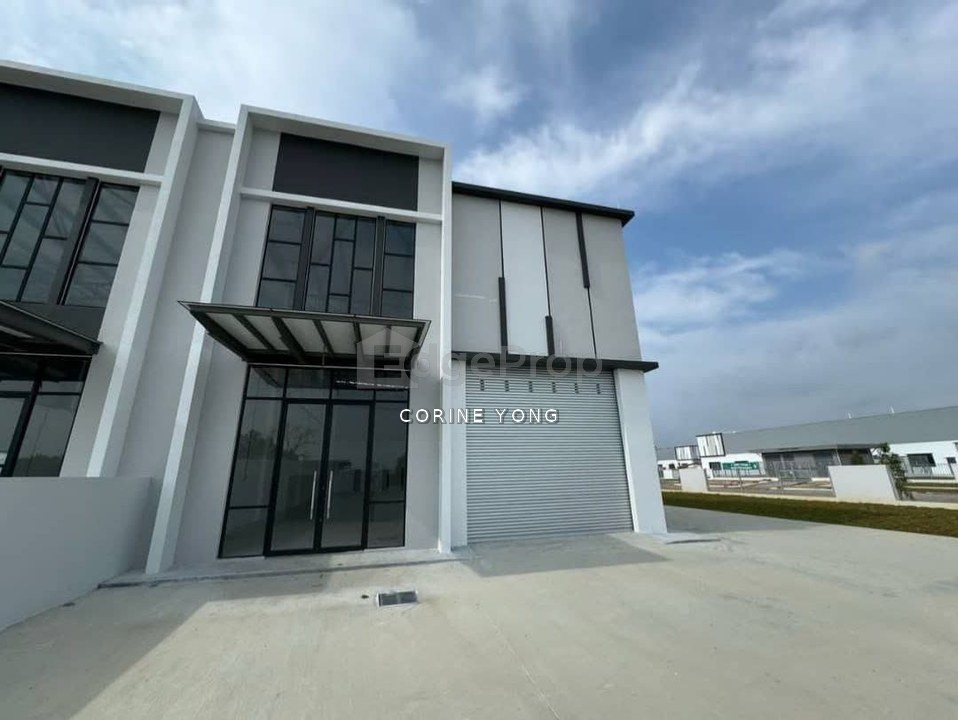

Residential · For rent
The Astaka @ 1 Bukit Senyum
Tebrau Highway, Bukit Senyum, Johor Bahru
4 Beds5 Baths2,217 sq ft
RM 7,200/mo
View listing ↗JB Real Estate Agent. Thoughtful guidance for residential and commercial property decisions.
WhatsApp: +60 11-1507 9267I’m Corine Yong (REN69697), a Johor Bahru real estate agent specialising in residential and commercial properties. With 3 years of experience, I advise families and investors on property purchases, sales and investment opportunities with a considered, detail-focused approach.
My priority is to understand each client’s objectives and provide clear, practical guidance throughout the property journey. Whether you are looking for a home, expanding your property portfolio or considering a commercial property in Johor Bahru, I aim to make every decision well-informed and thoughtfully handled.
A curated mix of homes, commercial spaces and industrial opportunities across Johor Bahru.






Listing details sourced from Corine’s EdgeProp pages in September 2026. “—” marks fields not shown on the source listing. Property availability and terms may change; please confirm directly with Corine.
Clear communication and practical advice are at the heart of every property journey.
“Add a verified client testimonial here.”Client name · Property type
“Add a second verified testimonial here.”Client name · Area
Testimonials are intentionally left as placeholders to avoid publishing unverified endorsements.
Whether you’re buying, selling or investing in Johor Bahru, share your objectives with Corine for a private, practical discussion.